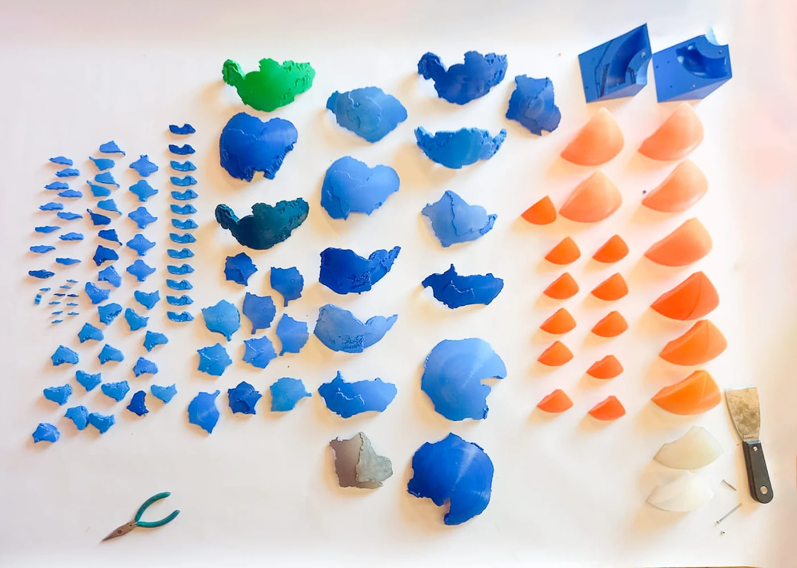

Modelo Didáctico Interactiva para la Enseñanza de Ciencias de la Tierra
FONDECYT N°1231783 (Práctica Profesional)
Geociencias, Pedagogía & Diseño Industrial
Representación 3D, Modelado CAD & Prototipado
Rhinoceros, Fusion 360, Impresión 3D FDM

El Brief & Marco de Investigación
Proyecto desarrollado en el marco del Fondecyt N°1231783: "Conocimiento Pedagógico del Contenido en profesores que enseñan Ciencias de la Tierra". El objetivo fue diseñar herramientas tangibles e interactivas para facilitar la comprensión de fenómenos geológicos complejos en el aula: la tectónica de placas y la estructura interna del planeta.
Desarrollo CAD & Sistema Tangible
Lideré la traducción 3D y prototipado del sistema de dos modelos integrados: 14 placas tectónicas encajables sobre una esfera de 150 mm y 8 secciones internas (núcleo interno, externo y manto) vinculadas mediante imanes de neodimio, permitiendo desensamblar el planeta y explorar su interior de forma táctil.
